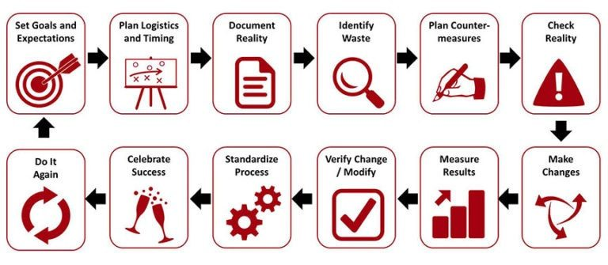

Contents
"Kaizen" is a Japanese word that means :change for better". In other words, Kaizen refers to activities that cause continuous improvements in business processes.
It is usually done with the aim to resolve problems within an organization's processes. Kaizen event breaks down a process, eliminates wastes and refurbishes the process into a more efficient form. More so, kaizen event is an efficient way to improve a process while fully utilizing the skill set of the team. A number of examples exist to acknowledge this fact.
There are various types of kaizen events such as point kaizen, plane kaizen, line kaizen and so on. However, they all have a common goal and structure. They seek to improve innovation in the workforce and cause a positive change in specific areas of the organization.
Moreover, organizations differ in their processes and problems. Depending on the nature of the problem, a kaizen event agenda might require a 3-day plan. Nevertheless, where the problem is demanding, the agenda can go as long as 5 days.
Although the event in itself is usually more emphasized, the pre-planning phase is just as important. The success or failure of the event depends largely on pre-event planning. As such, a kaizen event checklist ensures that necessary steps guide the process for a successful event.
Kaizen even is an important tool for improving organizational processes as well as creativity.
Kaizen Event
In today's face-paced organizations, a kaizen event is one of the most suitable tools for improvement. Kaizen event is a short-term initiative to improve targeted areas in work processes. It does not target an entire process and it lasts for a few (3-5) days. It is a tool that improves work processes and eliminates waste.
In addition, the exercise can be relevant to any area of an organization. For example, manufacturing, maintenance, service, administration, quality control and so on. Kaizen events are useful in reviewing work processes and development best practices. The events are also helpful in safety reviews to identify potential threats as well as proffer useful solutions.
A kaizen team usually implements the activities. A facilitator leads the event, with members from various departments. The team works towards achieving a common goal. They use their expertise and insight to improve the existing processes. In addition, the team enlighten other parties on the need for improvements.
Kaizen activities are done with clearly mapped out goals and specific processes to improve. Beyond these obvious reasons, it is also important to note that the exercise has additional benefits. With this in mind, organizations can have good reasons to implement a kaizen event periodically.
3 Ways a Kaizen Event Could Benefit Your Organization
- To develop leadership
Every kaizen event is organized by a team leader. A team leader does not necessarily have to be a top management staff. However, he/she facilitates and coordinates the event. The leader also manages team members. Hence, a kaizen exercise presents opportunities for non-management employees to demonstrate their leadership skills.
- To encourage teamwork Kaizen even boost employees' participation in work processes. Because employees take part in documenting and improving work processes, it gives team a sense of belonging. Thus, the event motivates them to work and drive new changes. Employees do not only form part of the team but become the agents of change. In addition, management can trust in the ability of employees to implement change and improvement.
- To boost collaboration
Kaizen event also boosts active collaboration. It involves the combination of multiple functions and skills. Teamwork plays an important role in a successful kaizen activity. Consequently, team members must learn to cooperate. They must develop active interpersonal skills, listening and communication skills. By contributing their skills and learning from others, participants can overcome the challenges of functional silos.
Technically, a kaizen event does not only impact targeted processes but the organization as well. A well-executed event can boost employees' morale and make them feel more involved.
Types of Kaizen Events
It is important that organizations make incremental improvements regularly. Executing a kaizen exercise can help them achieve this. The kaizen methodology is based on the fact that any problem, no matter how small, can be improved. Besides, small improvements lead to big results. There are various types of kaizen events an organization can adopt.
Types of kaizen:
- Point kaizen
- System kaizen
- Line kaizen
- Plane kaizen
- Cube kaizen
- Point Kaizen
The most common type of kaizen event is point kaizen. It is a quick improvement targeting a specific workstation. Not much planning is necessary for this. It is about "ready, fire, aim". As soon as an error is detected in the work process, a solution is implemented.
For example, during a routine inspection, a supervisor discovers that some goods in the shop are broken and expired. He could advise the shop owner to perform a 5S kaizen to resolve the issue. 5S kaizen is a process that helps in maintaining the discipline and standard of an organization.
Measures for point kaizen are usually small and easy to implement. Also, they are unconnected and can have a huge impact. In most cases, point kaizen events can have a boomerang effect. This means that its positive effects in one area could affect another area in a slightly negative way.
- System Kaizen
In addition, system kaizen is an organized type of kaizen event. It is useful in proffering solutions to problems that arise from the system. Unlike point kaizen, the plan and execution of system kaizen take longer.
- Line Kaizen
A line kaizen is a type of kaizen event in which the structure of improvement looks like the process of a model line. For instance, implementing a kaizen activity in procurement and planning department simultaneously. Since the planning department is upstream from procurement, we can safely call this a line kaizen.
- Plane Kaizen
On the other hand, plane kaizen is a higher form of line kaizen. The team works to improve multiple connecting processes in a model line.
Value streaming would be a more modern term to describe this type of kaizen event. This is because, in modern times, organizational designs fit more into value streams rather than traditional departments.
- Cube Kaizen
More so, cube kaizen is a type of kaizen event in which work improvements involve several interrelated processes. All points connect to each other. There is to disconnection in between processes.
Cube kaizen ensures that process improvements affect the entire organization. Hence, these improvements also have an effect on the organization's suppliers and customers.
Kaizen Event Agenda
Planning and preparation are key for a successful kaizen undertaking. A kaizen event agenda is one of the tools you need for effective planning It is used to organize activities for every day of the event. Typically, a kaizen event takes about 3-5 days to execute. However, for the purpose of this article, we will be using a 5-day even agenda.
- Before the event
Ensure that you put these vital details in place. First, map out the target process and goal of the event. You should also determine the venue for the event and who should be involved. Next, communicate the goals of the event to all parties involved. After that, select a team leader who will facilitate the event. Then, decide on the measures for evaluating performance and improvement.
Also, ascertain how the activities of the event will be documented and reported. When these details are ready, you are set to draw up your kaizen event agenda.
- 1st day of the event
The kaizen event team critically analyses the current state of the process. This is very important for proffering solutions. Although, it could be very hectic if the organization does not observe best practices. After analyzing the current state of the process, they define its expected state.
- 2nd day of the event
The team thinks through possible solutions. At this point, the team leader should encourage members to think innovatively. It is also important that team members are open to new ideas. However, it might take time for everyone to agree on actual changes.
- 3rd day of the event
The kaizen event agenda is to implement the changes agreed upon. The team introduces the changes to those involved with the process. In addition, the team ensures that these changes are carried out.
- 4th day of the event
The team monitors the outcome of implementation. The team utilizes the measures defined for evaluating performance during pre-event planning to achieve this. By so doing, they can determine whether there is an improvement or not.
- 5th day of the event
The kaizen event agenda is socializing for improvement. This entails training employees who work directly with the process on the new changes.
Also, the team makes a report of he lessons they have learnt to management and other employees. this is important as it could be useful to plan future kaizen events.

KAIZEN EVENT STEPS Basically, a kaizen event is a meeting that focuses on analyzing problems in a process and rendering useful solutions. Depending on the level of the improvement needed, a kaizen event might take as long as one week to implement. Regardless of the duration, a kaizen activity follows certain steps.
Step 1: Select an area for improvement
The first step for a successful kaizen event is to select an area of improvement. This can be done by analyzing the productivity of every department. Check for each department's compliance with best practices. Pick out departments that struggle to meet deadlines.
After identifying the problematic department, select a specific process that needs improvement.
Step 2: Select a team The second kaizen event step is to select a team. It is important that at least 50% of the team members are employees who perform the work that requires improvement. Experts and employees from other departments can make up the remaining 50%. After selecting team members, choose a team leader.
The team leader should not be directly involved in the process that needs to be changed. If he does, he might not be open to suggestions for changes.
Step 3: Implementation
The third step is implementation. The team gathers data relating to the problem identified in the process. After which they analyze them with tools like "5 whys" or value-stream mapping. "5 Whys", as the name implies asks five "why" questions to critically understand the problem.
On the other hand, value-stream mapping reveals the key steps needed for the process. After analyzing the data, the team determines suitable lines of action for executing changes.
Step 4: Follow up
The final kaizen event step is a follow-up. After implementing changes, the team continuous monitoring the process. This will help them understand how the organization observes best practices. In addition, it will help them assess the process for potential improvements.
Furthermore, to be certain that accurate changes have been made, the team should plan specific times for follow-up. They should also use performance metrics to evaluate the outcome after implementation. By so doing, they will be able to determine the extent of the event improvement. If the team observes that the improvement is not what they expected, they might need to perform another kaizen exercise.
However, if the event achieves its goal, the team may plan another event to target processes in other departments. Kaizen event is a journey towards improvement. Therefore, it requires an ongoing series of continuous improvements.
Generally, kaizen events present opportunities for everyone interested to partake in improving the organization's processes.
Kaizen Event Checklist
Planning a kaizen activity is tasking. One of the best ways to make planning effective is to create a kaizen event checklist. Thus, in simple terms, a kaizen event checklist should be in bullet points so that an event can easily be checked off when completed. It can be digital or printed on paper. Whichever the case, it is important that the checklist contains every activity.
Furthermore, you can divide the kaizen event checklist into sections based on time periods. For example, planning, pre-event, event and post-event.
The planning section of the kaizen event checklist covers all the items needed before the event. It should include the people involved in the event as well as team members and sponsors. Also, include the budgets and goals of the event in this section.
Pre-event section
More so, the pre-event section should include a schedule of the kaizen event. Ensure that key participants are aware of their roles during the event. Itemize resources needed for the event. In addition, make a list of activities that require approval from management.
Main event section
The next section of the checklist is the main kaizen event. This part includes all the activities that will take place during the event. It is important to organize this section in a sequential order so that nothing is left out. You can make a detailed step-by-step list of activities that will take place at the kaizen event.
Post-event section
Although post-event is often overlooked when preparing for an event, it is equally as important. The post-event section of the kaizen event checklist contains all the tools for gathering data. Itemize periods for follow-up meetings and result sharing. additionally, list out people who contributed to the success of the event and how you wish to appreciate them.
Creating a kaizen event checklist requires collaboration and idea sharing. For a checklist to be complete, you will need the input of others.
Summary
In summary, a kaizen event is a short-term initiative implemented to improve an organization's processes. The events are as beneficial to the employees as they are to the organization.
Moreover, these events are useful in ensuring continuous incremental improvements. There are different types of kaizen event an organization can adopt. For example, point kaizen, line kaizen, system kaizen, plane kaizen, and cube kaizen.
Every successful event must follow some basic steps. Kaizen event steps are all the activities that take place before, during and after an event. These include selecting the area needing improvement, forming a team, implementation, monitoring and follow-up.
Furthermore, there are various tools that help to ease the stress of planning for a kaizen activity. Kaizen event agenda helps you to map out activities for each day of the event. Also, a kaizen event checklist serves as a reminder for all the activities that are necessary for a successful event execution.
Finally, implementing a kaizen is not an automatic solution to organizational problems. Nevertheless, it is an important tool for achieving improvements. More so, a kaizen event helps managers to have a better picture of their business processes.
Questions? Contact Us
If you want to learn how to instill a Kaizen Event within your organization contact us at Chmltech today. We specialize in creating Kaizen Event and have a proven track records of powerful results. Contact us NOW!
Read next: How to Use Lean Methodology to Eliminate Waste and Streamline Operations; Lessons Learned from Deploying 5S in the Service Industry; Implement These Proven Steps to Benchmark and Optimize Your Business Processes. If you want help putting this into practice, see our Lean Six Sigma training.